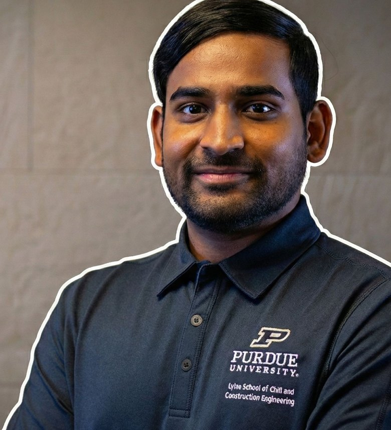

Research that reaches practice.
I'm a Transportation Research Engineer at Purdue University's Joint Transportation Research Program (JTRP), where I turn large-scale connected-vehicle and probe data into performance measures that transportation agencies can act on. My work spans traffic safety, work zones, winter and incident operations, and the emerging use of vehicle-based metrics — such as hard braking — as surrogate safety measures.
Much of this research is deployed at statewide scale with INDOT and FHWA, and has informed how agencies monitor mobility during winter storms, work zones, and large events like the 2024 solar eclipse. I earned my Ph.D. at Purdue and my bachelor's and master's at IIT Madras, and I'm a licensed Professional Engineer in Indiana.

Path so far.
Transportation Research Engineer
Lead connected-vehicle data research for INDOT and FHWA, developing statewide safety and mobility performance measures.
Graduate Research Assistant
Ph.D. research on connected-vehicle data for operational decision-making across mobility, safety, and winter operations.
Executive Consultant, Transportation
Advised on transportation strategy and infrastructure programs.
Visiting Undergraduate Researcher · PURE Scholar
Among the top three civil-engineering students chosen across India for the Purdue Undergraduate Research Experience.